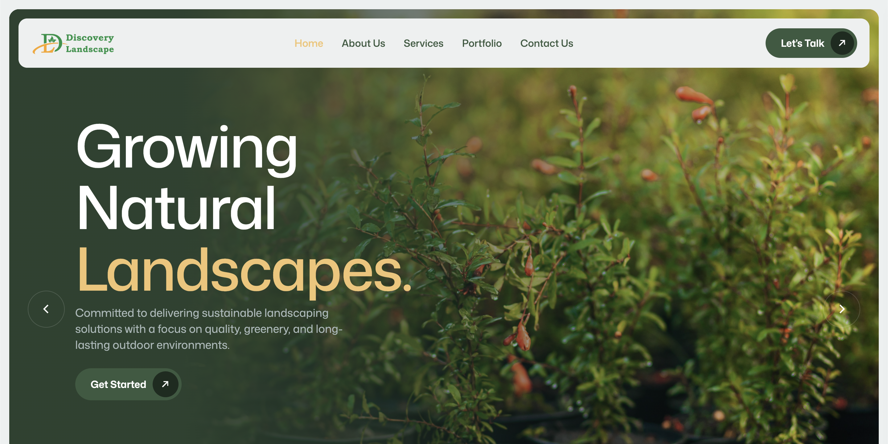
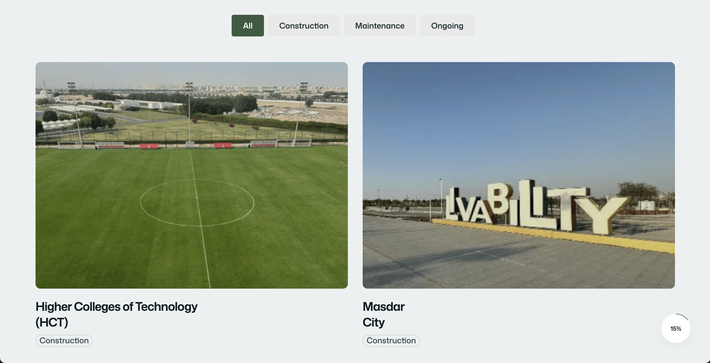
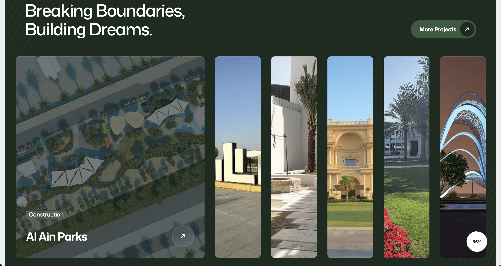

DISCOVERY
LANDSCAPE
Based in Abu Dhabi at 50 Al Tamam St (Madinat Al Riyad), Discovery Landscape is a leading landscaping firm operating across the UAE. They required a comprehensive website redesign and frontend development overhaul to modernize their digital presence and better reflect the premium quality of their work.
The project involved creating a digital experience that showcased their three core service pillars—Construction, Maintenance, and Nursery—while communicating their deep commitment to sustainability and environmental respect.
The UI/UX strategy was deeply rooted in the company's core principles. The visual hierarchy and user journey were designed to immediately communicate their mission: To be a leading landscape company recognized for creating sustainable, functional, and inspiring outdoor environments that enhance communities and add lasting value.
To achieve this, the interface utilized earthy, organic tones paired with clean, architectural typography. The site architecture was streamlined to guide potential commercial and residential clients intuitively through their portfolio and core offerings.
Aligning Design with Vision:
- Professional Expertise: Highlighting skilled teams and reliable execution through structured case study layouts and trust-building social proof.
- Sustainability: Integrating green space imagery and messaging that underscores their respect for the environment and long-term performance.
- Clarity of Services: Creating dedicated, easily navigable hubs for Construction, Maintenance, and Nursery operations.


On the development side, the goal was to deliver a lightning-fast, highly responsive website. To respect strict project timelines while ensuring long-term performance and visibility, a pre-built, deeply SEO-optimized template framework was utilized as the foundation.
This framework was extensively customized at the code level to match the bespoke UI/UX designs. The resulting frontend architecture provided Discovery Landscape with a scalable digital asset, optimized for local search rankings in the competitive UAE landscaping market.

The completed frontend codebase was successfully delivered to the Discovery Landscape team for their internal hosting and deployment. The new digital presence successfully bridges the gap between their hands-on landscaping expertise and their online brand identity, equipping them to attract larger commercial contracts and exceed client expectations across Abu Dhabi.